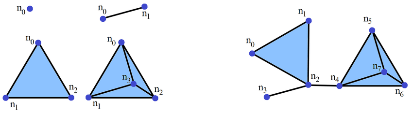
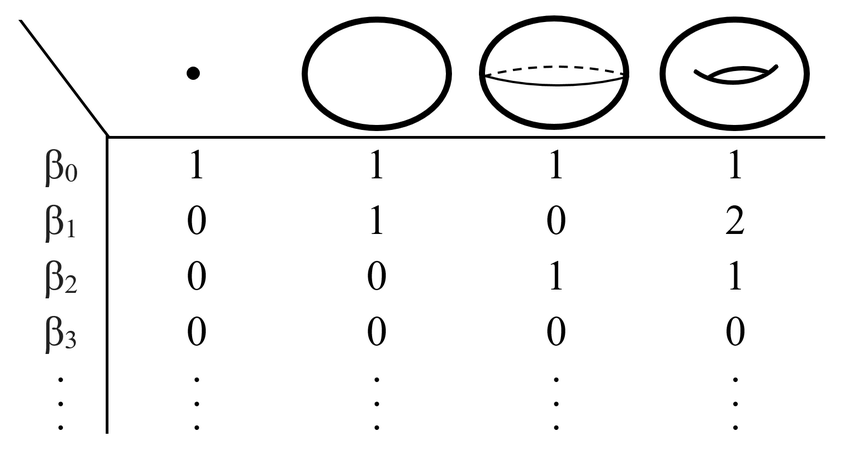

As we increase the radii of the balls, we see that holes appear and disappear. Also we note that each prior simplicial complex corresponding to smaller radii is a subcomplex of the new simplicial complex corresponding to the larger radii.
A sequence of simplicial complexes linked by inclusion maps is called a filtration.
Thus, we can keep track of the creation and destruction of topological features of different rank for each complex in the filtration.
We will model persistence diagrams as a PPPs. We sample $n$ random points and spatially distribute them. The points are birth and persistence pairs, that is $x_i= (b, p) = (b, d - b), \ i=1,\dots, n$.
The point processes are characterized by the intensity $\lambda(x_i)$, that is the density of the expected number of points at $x_i$.
Def.1) Let $\mathbb{X}$ and $\mathbb{M}$ be Polish spaces. Suppose $\ell : \mathbb{X} \times \mathbb{M} \rightarrow \mathbb{R}^+ \cup \{0\}$ is a function satisfying:
Then $\ell$ is a stochastic kernel from $\mathbb{X}$ to $\mathbb{M}$.
Def.2) Let $\Psi_M$ be a finite point process on $\mathbb{X} \times \mathbb{M}$ such that:
Then $\Psi_M$ is a marked Poisson point process.
Learn more!